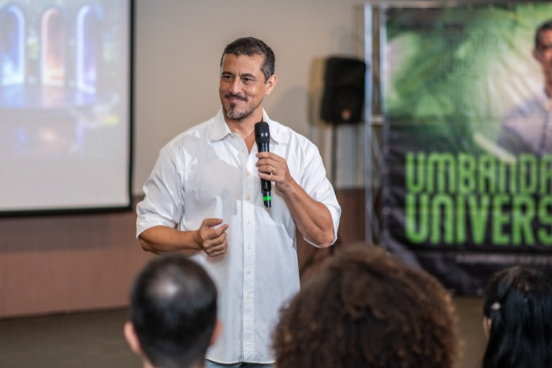
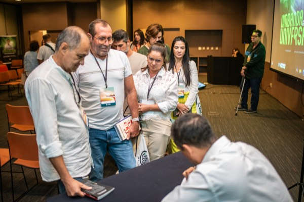

Imersão Umbanda Natural
23 e 24 de Outubro | Evento 100% Online
Você não chegou até aqui por acaso.
Existe dentro de você uma sensibilidade que talvez nunca soube explicar!
Um sonho que se repete, uma vontade de ajudar que não sabe de onde vem, uma sensação de que percebe coisas que os outros não percebem.
Em 2 dias, com fundamento teológico e sem misticismo vazio, você vai entender o que isso significa.
QUERO ENTENDER O QUE EU SINTOAO VIVO · ONLINE · VAGAS LIMITADAS


